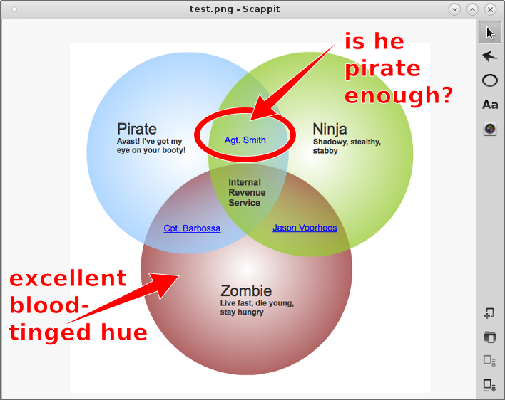

*scappit
Simple and fast screenshot creation and annotation
Fetch and build
$ git clone https://github.com/ohwgiles/scappit.git
$ mkdir -p path/to/build && cd path/to/build
$ cmake path/to/source -DCMAKE_BUILD_TYPE=Release -DCMAKE_INSTALL_PREFIX=/usr
$ make
$ sudo make install
$ mkdir -p path/to/build && cd path/to/build
$ cmake path/to/source -DCMAKE_BUILD_TYPE=Release -DCMAKE_INSTALL_PREFIX=/usr
$ make
$ sudo make install